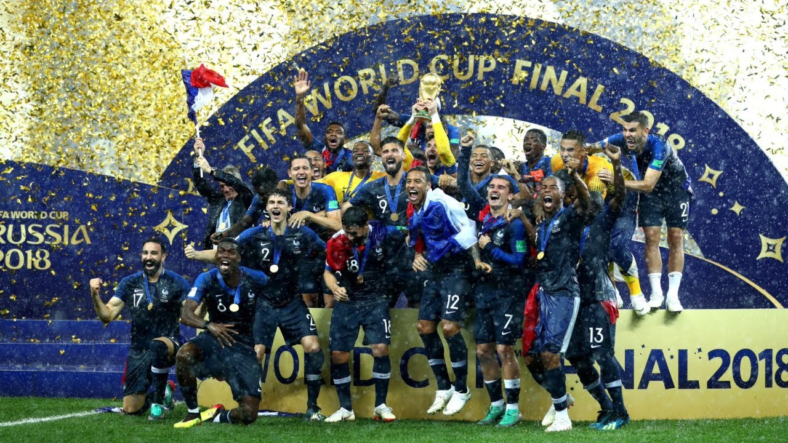

CAMPEÓN MUNDIAL 2010
Final: España se enfrentó a los Países Bajos en la final de la Copa Mundial de la FIFA 2010. El partido fue muy
físico y lleno de tarjetas amarillas, pero España finalmente logró marcar un gol en el minuto 116 gracias a
Andrés Iniesta y ganó 1-0. Este fue el primer campeonato mundial de España y fue muy celebrado por los fanáticos
y jugadores del equipo.
Leer más

CAMPEÓN MUNDIAL 2018
En la Copa del Mundo de 2018 en Rusia, Francia logró su segundo título de campeón del mundo tras derrotar a
Croacia por 4-2 en la final. Francia comenzó el torneo con una victoria por 2-1 sobre Australia, seguida de una
victoria por 1-0 sobre Perú y un empate 0-0 contra Dinamarca en la fase de grupos.
Leer más

CAMPEÓN MUNDIAL 2022
El Mundial de la FIFA 2022 se llevará a cabo en Qatar, y aún no se han disputado las clasificatorias para
determinar qué equipos estarán presentes en el torneo. Argentina tendrá que clasificar para el Mundial, como
todos los demás equipos, y tendrá que enfrentarse a otros equipos de Sudamérica en la clasificación.
Leer más